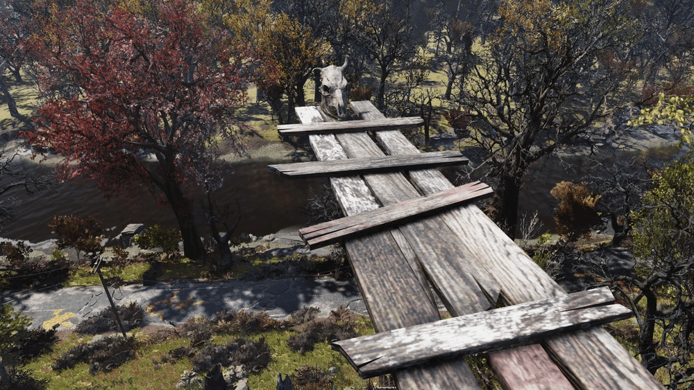
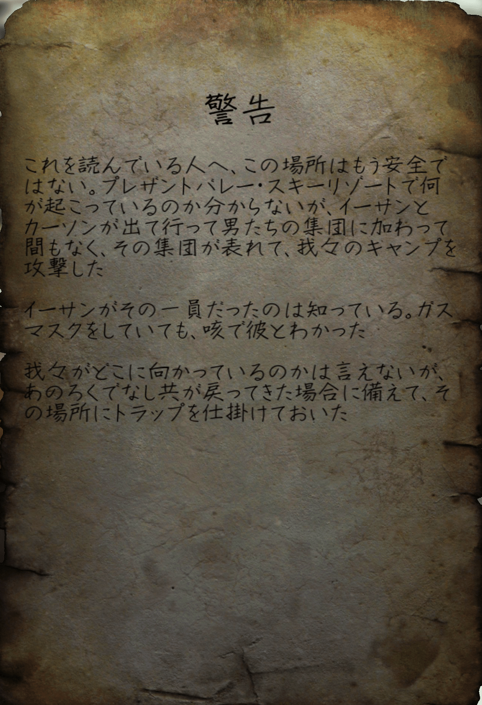
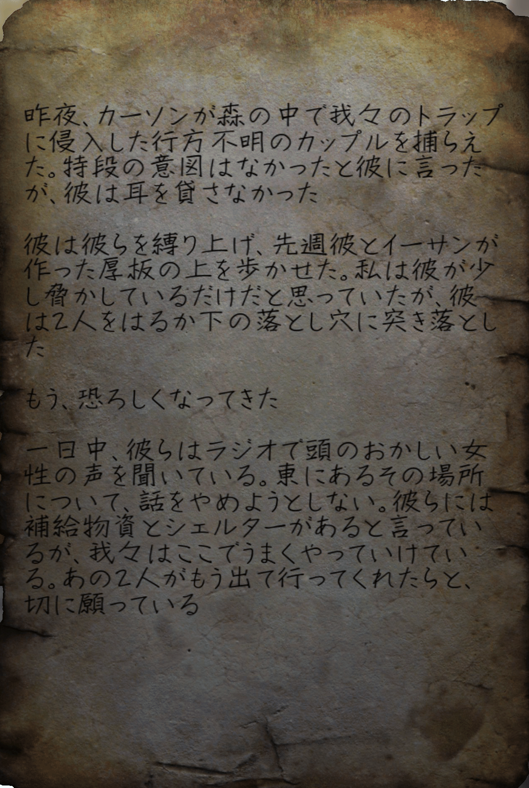
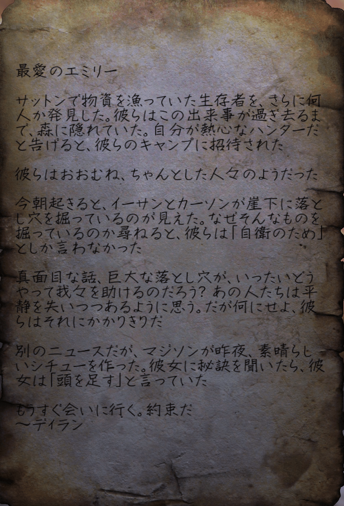
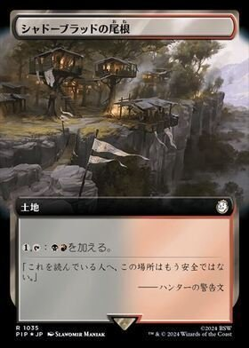

ハンター・リッジ
ハンター・リッジは、アパラチアの森林地帯にある場所で、現在はブラッドイーグルが占領しています。
背景
ハンターズ・リッジは、狩猟者が荒野で獲物を探すために利用した、木に設置された見晴らしの良い場所でした。
住民の中には、ラジオでローズのたわごとを聞いた後、レイダーに転向した者もいましたが、それ以前から彼らは非会員、特に罠を盗んだ者に対してますます敵対的な姿勢をとっていました。
崖の底にあるスパイクピットは、処刑場として、また侵入者に対する抑止力として設けられました。
過激派が世界の頂上へ去った後、ハンターたちは一息ついたと思った。
しかし、去ったイーサンとカーソンの2人はすぐにレイダーの一団を率いて戻ってきて、その場所を一掃した。
残りのハンターたちはカーソンに気づき、その場所にブービートラップを仕掛けて、より緑豊かな牧草地へと去ることを決めた。
レイアウト

野営地は、ロープ橋でつながれた4つのツリーハウスで構成されており、ツリーハウスへ続くランプ、地上のベースキャンプ、そして景色の良い展望台へとアクセスすることができる。
展望台の一部は、犠牲者が崖の底にあるスパイクの穴に「板を歩く」ように改造されており、急降下して落下死か木に刺殺される様になっている。
肉は、その場所の木に吊るされた数匹のラッドスタッグから入手できる。
テント北側の屋根付きの張り出しの下には、 アーマー作業台がある。
注目すべき戦利品
ハンターの警告- メモ

グレネードブーケトラップのあるガゼボにドライバーで釘付けにされている。
内容としてはプレザントバレー・スキーリゾートにて結成されたレイダーにイーサンとカーソンが加わって我々のキャンプを襲撃してきた。
次に備えてトラップを仕掛けておいた。
という内容。
ハンターの日記- メモ

南西のツリーハウスのソファに置かれている。
内容としては、カーソンが縄張りに侵入してきた無抵抗のカップルに対してイーサンの作った板を渡らせて突き落とした。
ラジオでローズの声を聞いてその東の場所に補給物資とシェルターがあるから行こうという話と、カーソンとイーサンが早く出て行ってくれればいいのに。
という内容。
未送信の手紙- メモ

エリアの南端近くのプラットフォームにある監視塔近くの樽の上に置かれている。
内容は、ディランがエミリーに対しての宛てたメッセージで、サットンで物資を漁っていた生存者を発見して、自分達はハンターだと言うことを告げると彼らのキャンプに招待されて良い人達だった。
イーサンとカーソンが崖下に落とし穴を自衛の為に作っているという話と、マジソンが素晴らしいシチューを作って秘訣を聞いたら「頭を足す」と言われた。
もうすぐ会いに行く。
という内容。
レシピ：ラッドスタッグシチュー
調理台の近くのテーブルにラッドスタッグの頭が置かれている。
ボブルヘッド
北東にあるツリーハウスの屋根の上、石化した死体のすぐ前に置かれている。
雑誌
最西端のツリーハウスの木の幹のそばのソファーの下。
ボブルヘッドと雑誌、それにブラッドイーグルを狩るのにいい場所です。
森林地帯はボブルヘッドと雑誌が豊富で良いですよね。
メモにも記されている通り、今ではハンターの住処では無くブラッドイーグルに占領されています。
橋の上のブラッドイーグルはレレレ撃ちされるとVATSでは当たらなくなる為、初動は上から倒すと時間がかからなくて良いです。
ロアを見ると2人がレイダーに加わるまでの様子と残ったハンターとの戦いの跡が見られます。
登場人物はここでしか登場せず、彼らの生死や行方は不明となっています。

コミュニティ維持のため、寄付を受け付けております。
> COMMENTS